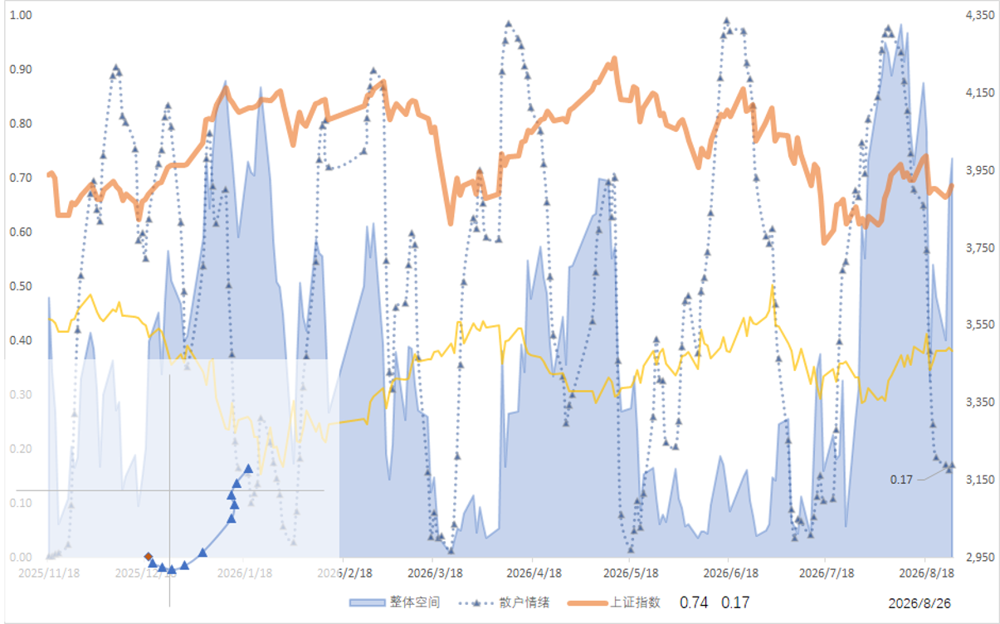

【260826】市场短期反弹是否进入尾声
短期反弹进入观察窗口。全市场温度与行业结构同时释放出值得警惕的信号：上行空间被压缩，而情绪修复尚不充分。下面两张图分别看全市场温度与行业分化。

从全市场温度看，代表上行空间的整体指标已降至 0.74，意味着指数在此基础上的继续上行空间仅剩约 26%，反弹的安全垫正在变薄。与此同时，散户情绪指标在经历前期剧烈回撤后，读数仅 0.17，虽仍处低位，但已出现边际修复的苗头——这不是新一轮亢奋的起点，而是恐慌宣泄后的阶段性缓和。
空间维度上，剩余上行空间已被明显压缩；情绪维度上，修复刚刚启动、尚未形成趋势。我们对短期反弹的判断趋于谨慎：反弹大概率已进入尾声，后续更可能以震荡与结构分化为主，而非单边上行。

行业层面，强弱分布呈现典型的分化格局：少数高波动且维持相对强势的方向，与大量处于低波动、相对弱势区间的行业形成鲜明对比。这种"少数活跃、多数沉寂"的结构，正是反弹后期资金在有限空间内抱团少数主线的特征，也提示全面性行情的条件尚未具备——选对结构，比判断方向更重要。
评论